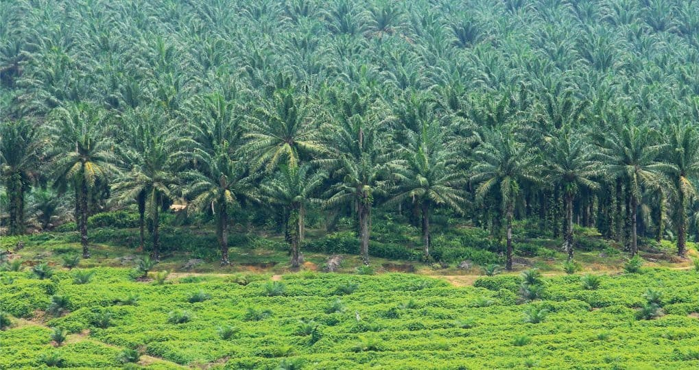

Some representative placeholder content for the first slide.
Second slide label
Some representative placeholder content for the second slide.

Third slide label
Some representative placeholder content for the third slide.
Selamat Datang di WebGIS Desa Suko Mulyo
Profil Singkat Desa Suko Mulyo
Desa Suko Mulyo merupakan salah satu desa yang berada di wilayah Kecamatan Sepaku, Kabupaten Penajam Paser Utara, Provinsi Kalimantan Timur. Desa ini terletak sekitar 7 km dari pusat kecamatan dan ±94 km dari ibu kota kabupaten. Dengan luas wilayah mencapai 1.862 hektare, Desa Suko Mulyo terdiri atas 3 dusun dan memiliki jumlah penduduk per Juni 2025 sebanyak 2.219 jiwa dari 757 kepala keluarga (KK), yang terdiri dari 1.119 jiwa laki-laki dan 1.096 jiwa perempuan.
Mayoritas penduduk Desa Suko Mulyo memeluk agama Islam dan berasal dari suku Jawa. Namun demikian, keberagaman tetap terjaga dengan adanya masyarakat dari suku Madura, Banjar, Bugis, Sunda, hingga Aceh. Dari segi klasifikasi, berdasarkan data Dirjen Bina Pemerintahan Desa Kementerian Dalam Negeri, Desa Suko Mulyo termasuk dalam kategori Desa Swakarya, yakni desa yang berkembang melalui pemanfaatan potensi lokal secara mandiri dalam pembangunan ekonomi, sosial, dan tata kelola pemerintahan.
Secara topografi, wilayah desa berada pada ketinggian antara 0–50 meter di atas permukaan laut dengan kemiringan lahan berkisar 0–25 derajat. Desa ini dilewati oleh dua sungai yaitu Sungai Kali Wangi dan Sungai Sepinggan, yang menjadi sumber air utama bagi masyarakat. Iklim di Desa Suko Mulyo termasuk dalam kategori tropis basah, dengan curah hujan yang tidak merata sepanjang tahun dan tidak memiliki perbedaan musim yang signifikan.